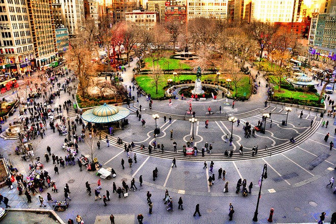
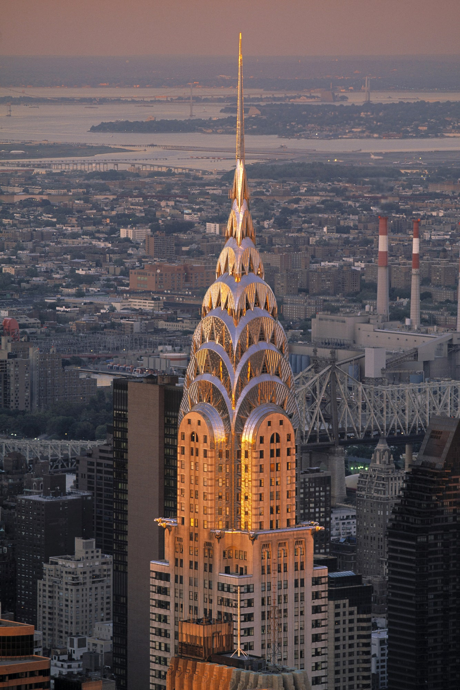

New York City

New York City is the largest city in the United States.Some people come here to enjoy the Broadway shows; others come specifically to shop and dine. Many come simply to see numerous world famous museums.If you can’t walk to your destination, mass transit is the next-best way to get around. The City’s rail and bus system is run by the Metropolitan Transportation Authority and known as MTA New York City Transit. It’s inexpensive, environmentally friendly and a great way to see sights throughout the five boroughs—and it operates 24 hours a day, seven days a week. The system is accessible to passengers with visual, hearing and mobility disabilities.

The historic intersection of Union Square is located where Broadway and the former Bowery Road came together in the early 19th century. It is now a mega shopping zone with everything from Whole Foods to Nordstrom Rack populating the area. During the holidays it is particularly lovely, with outdoor tents featuring all sorts of gifts, handmade soaps, scarves, and craft items. Home to the Greenmarket, Union Square is also where all the local, organic and fresh food and flowers are showcased on Mondays, Wednesdays, Fridays and Saturdays by New York farmers in an outdoor setting.

The Statue of Liberty stands in Upper New York Bay, a universal symbol of freedom. Originally conceived as an emblem of the friendship between the people of France and the U.S. and a sign of their mutual desire for liberty, over the years the Statue has become much more. It represents the United States itself.

The Chrysler Building is an Art Deco skyscraper in the Turtle Bay neighborhood on the East Side of Manhattan, New York City, at the intersection of 42nd Street and Lexington Avenue near Midtown Manhattan. At 1,046 feet (319 m), it is the tallest brick building in the world with a steel framework, and was the world's tallest building for 11 months after its completion in 1930.